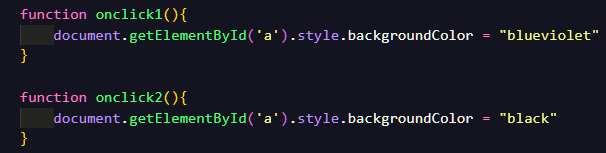
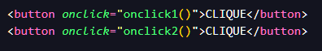
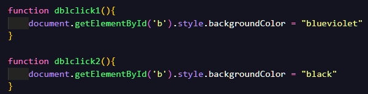
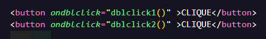
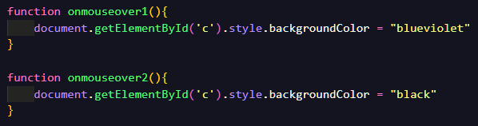
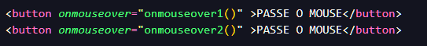
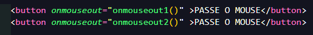
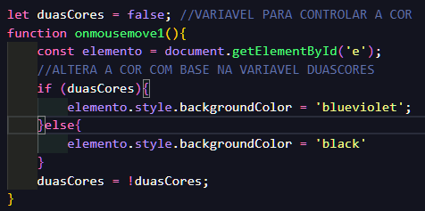
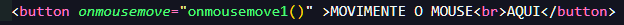
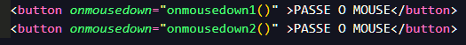

Eventos são ações disparadas pela interação dos usuarios na pagina.
É o correto manejo desses eventos que tornam as pagunas interativas e dianamicas.
Existem muitos eventos. Veja os mais utilizados:
onclick -> Disparado quando recebe um click. OK
ondblclick -> Disparado quando recebe click duplo.OK
onmouseover -> Disparado quando o mouse esta sobre.OK
onmouseout -> Disparado quando o mouse é movido para fora do elemento.OK
onmousemove -> Disparado quando o mouse é movimentado no elemento.OK
onmousedown -> Disparado quando o click do botão foi pressionado.OK
onmouseup -> Disparado quando o click do botão é liberado.
onfocus -> Disparado quando o elemento recebe o foco.
onchange -> Disparado quando existe uma mudança no conteudo. "Ao mudar"
onblur -> Disparado quando o elemento perde o foco.
onkeydow -> Disparado quando uma tecla é pressionada.
onkeypress -> Disparado quando uma tecla é pressionada e solta.
onkeyup -> Disparado quando uma tecla é solta sobre um elemento.
onload -> Disparado quando a pagina terminou de ser carregada. Body.
onresize -> Disparado quando há um redimencionamento da janela.
A propriedade onclick é usada para associar um evento a um elemento HTML, permitindo que uma função seja executada quando o elemento for clicado.
Descrição Detalhada:
Nome do Evento: onclick
Significado: Disparado quando o elemento ao qual está associado recebe um clique (geralmente com o botão principal do mouse).
Uso Comum: Geralmente usado para executar funções JavaScript ao clicar em botões, imagens, links ou outros elementos HTML.
O efeito desdes botões é exatamente o onclick
Codigo JavaScript
Codigo HTML

O evento ondblclick no HTML é disparado quando o usuário realiza um clique duplo em um elemento. Ele é diferente do evento onclick, que é acionado com apenas um clique simples.
Explicação
ondblclick: É usado para executar uma ação ao clicar duas vezes rapidamente sobre o elemento.
Diferença para onclick:
onclick: Dispara no primeiro clique.
ondblclick: Exige dois cliques consecutivos em rápida sucessão.
O efeito desdes botões é exatamente o ondblclick
Codigo JavaScript
Codigo HTML

O evento onmouseover é disparado quando o ponteiro do mouse passa ou fica sobre um elemento HTML.
Esse evento é muito útil para criar interatividade, como alterar o estilo ou exibir informações adicionais quando o usuário interage com o elemento.
Explicação:
onmouseover: Ocorre no momento em que o mouse entra na área do elemento.
O efeito desdes botões é exatamente o onmouseover
Codigo JavaScript
Codigo HTML

A propriedade onmouseout em JavaScript é um manipulador de eventos usado para detectar quando o ponteiro do mouse sai de dentro de um elemento HTML.
Esse evento é útil para realizar ações como alterar o estilo do elemento ou reverter alterações feitas durante o evento onmouseout.
Funcionamento
Quando o ponteiro do mouse deixa a área de um elemento, o evento onmouseout é disparado e a função associada é executada.
O efeito desdes botões é exatamente o onmouseout
Codigo HTML
A função JavaScript, segue o mesmo padrão dos demais.
O evento onmousemove é disparado continuamente enquanto o ponteiro do mouse está sendo movido sobre um elemento.
Ele é frequentemente usado para rastrear a posição do mouse ou para criar interações dinâmicas baseadas no movimento do ponteiro.
O evento onmousemove é acionado sempre que o ponteiro se move dentro da área do elemento associado.
Ele pode ser usado, por exemplo, para: Detectar a posição X e Y do mouse.
Criar animações ou efeitos dinâmicos.
Atualizar valores com base no movimento do mouse.
O efeito desdes botões é exatamente o onmousemove
Codigo JavaScript
Codigo HTML
O evento onmousedown é disparado no momento em que um botão do mouse é pressionado enquanto o cursor está sobre um elemento. Ele ocorre antes de o botão ser solto, sendo ideal para capturar o início de uma interação via clique. O onmousedown é acionado no instante em que o botão do mouse é pressionado (antes do onmouseup e do onclick). Ele pode detectar qual botão do mouse foi pressionado, como o botão esquerdo, direito ou do meio.
O efeito desdes botões é exatamente o onmousedown
Codigo HTML
A função JavaScript, segue o mesmo padrão dos demais.
O evento onmouseup é disparado no momento em que um botão do mouse é liberado após ter sido pressionado enquanto o cursor está sobre um elemento. Ele complementa o evento onmousedown, sendo ideal para capturar o final de uma interação via clique. O onmouseup ocorre quando o botão do mouse é solto. Ele pode ser usado para detectar o término de uma ação iniciada com onmousedown. É acionado tanto para o botão esquerdo, quanto para o botão direito ou do meio.
O efeito desdes botões é exatamente o onmouseup
Codigo HTML
A função JavaScript, segue o mesmo padrão dos demais.
O evento onfocus é disparado quando um elemento HTML recebe o foco, geralmente ao ser clicado com o mouse ou acessado via teclado (como com a tecla Tab). Ele é mais comumente usado em elementos interativos, como caixas de texto, botões e outros componentes de formulário. Principais Características do onfocus Quando ocorre: O evento é acionado quando o elemento está pronto para receber entrada do usuário. Onde é utilizado: Em elementos que podem ser focados, como <input>, <textarea>, <select>, <button>, e até <a> (se configurado com tabindex). Foco do navegador: Geralmente depende de como o usuário interage com a página (mouse ou teclado).
O efeito desdes botões é exatamente o onmouseout
O evento onchange é disparado quando há uma mudança no conteúdo de um elemento e essa mudança é confirmada. Geralmente, ele é usado em elementos interativos, como campos de formulário, e ocorre quando o valor do elemento muda e perde o foco. Principais Características do onchange Quando ocorre: O evento é disparado após o foco sair do elemento e o valor tiver sido modificado. Para alguns elementos, como caixas de seleção (<select>), ele dispara imediatamente após a seleção de um novo valor. Onde é utilizado: Principalmente em campos de entrada, como <input>, <textarea>, <select> e outros elementos que permitem ao usuário alterar dados.
O efeito desdes botões é exatamente o onmouseout
O evento onblur é disparado quando um elemento de entrada (como <input>, <textarea>, etc.) perde o foco. Isso significa que o usuário clicou fora do elemento ou usou a tecla Tab para navegar para outro campo ou elemento da página. Características Principais do onblur Quando ocorre: Disparado assim que o elemento perde o foco, independentemente de haver alterações no valor. Onde é utilizado: Geralmente em campos de formulário para validações ou para atualizar dados automaticamente após a interação do usuário. Diferença para onchange: O onchange só dispara se o valor foi alterado antes do foco ser perdido. O onblur dispara sempre que o elemento perde o foco, independente de mudanças no conteúdo.
O efeito desdes botões é exatamente o onmouseout
O evento onkeydown é disparado quando uma tecla é pressionada no teclado. Esse evento ocorre assim que a tecla é pressionada, antes de ser liberada, o que o torna útil para detectar ações rápidas de teclado. Características do onkeydown: Quando ocorre: Assim que uma tecla é pressionada, antes mesmo do caractere ser inserido no campo ou do evento onkeypress. Diferença para outros eventos de teclado: onkeypress (obsoleto): Também ocorre ao pressionar uma tecla, mas não é acionado para teclas não imprimíveis (como Ctrl ou F1). onkeyup: Ocorre quando a tecla é liberada, após onkeydown. Acesso à tecla pressionada: A propriedade event.key retorna a tecla específica. event.code retorna o código da tecla física, independente do idioma.
O efeito desdes botões é exatamente o onmouseout
O evento onkeypress é disparado quando uma tecla é pressionada e liberada. Ele é utilizado para capturar entradas de texto, como quando um caractere é inserido em um campo de texto. Esse evento acontece após o onkeydown (quando a tecla é pressionada) e antes do onkeyup (quando a tecla é liberada). Características do onkeypress: Quando ocorre: O evento é disparado quando uma tecla é pressionada e depois liberada. Ele captura apenas teclas que resultam em caracteres visíveis, como letras, números e alguns símbolos. Teclas que não são capturadas: As teclas modificadoras como Shift, Ctrl, Alt e as teclas de função (F1, F2, etc.) não disparam o evento onkeypress, pois não geram caracteres visíveis. Acesso à tecla pressionada: O valor da tecla pressionada pode ser obtido através da propriedade event.charCode (ou event.keyCode, que está obsoleto). event.key também pode ser usado para obter a tecla pressionada (como "a", "Enter", etc.).
O efeito desdes botões é exatamente o onmouseout
O evento onkeyup é disparado quando uma tecla é solta (ou seja, quando o usuário deixa de pressionar uma tecla) enquanto o foco está sobre um determinado elemento, geralmente um campo de entrada de texto ou qualquer outro elemento que possa capturar eventos do teclado. Características do onkeyup: Quando ocorre: O evento é disparado após a tecla ser solta. Ele acontece após o evento onkeydown (quando a tecla é pressionada) e após o evento onkeypress (quando a tecla é pressionada e liberada). Captura da tecla solta: Você pode acessar o valor da tecla solta usando a propriedade event.key, que retorna o nome da tecla pressionada (como "a", "Enter", "Backspace", etc.). Em navegadores mais antigos, pode-se usar event.keyCode, mas event.key é a forma mais recomendada e moderna.
O efeito desdes botões é exatamente o onmouseout
O evento onload é disparado quando a página foi completamente carregada, incluindo todos os elementos (como imagens, scripts, folhas de estilo e outros recursos). Ele é comumente usado para inicializar funções ou configurações após o carregamento completo da página. No caso do onload aplicado ao <body>, ele é executado assim que o conteúdo da página estiver pronto e renderizado no navegador, o que significa que todos os elementos HTML, CSS e scripts foram carregados e estão prontos para serem manipulados. Resumo: O evento onresize é útil para monitorar e reagir ao redimensionamento da janela ou de um elemento. Ele pode ser usado para ajustar o layout, o comportamento da página ou para outras interações dinâmicas baseadas no tamanho da janela ou de um elemento.
O efeito desdes botões é exatamente o onmouseout
O evento onresize é disparado sempre que ocorre um redimensionamento da janela do navegador ou de um elemento específico. Ele é útil quando você deseja fazer ajustes na página ou no layout, conforme a janela é redimensionada. Como funciona: Em elementos da janela (como window.onresize): O evento é acionado sempre que o tamanho da janela do navegador é alterado (por exemplo, quando o usuário redimensiona a janela). Em elementos específicos: Embora o evento resize também possa ser aplicado a elementos que possuem a propriedade CSS resize, ele não dispara automaticamente em elementos como div, a menos que o próprio conteúdo ou tamanho seja alterado dinamicamente com JavaScript. Sintaxe: Você pode adicionar o evento onresize diretamente no objeto window ou em elementos da página (embora o uso com o window seja mais comum para monitorar o redimensionamento da janela): Detalhes importantes: Usabilidade: É frequentemente usado para ajustar o layout da página, como mudar o número de colunas em um design responsivo ou ajustar imagens e elementos que devem se adaptar ao tamanho da tela. Performance: Como o evento onresize pode ser disparado várias vezes durante o redimensionamento, é importante garantir que o código dentro do evento não seja pesado ou cause impactos de performance. Uma maneira de lidar com isso é usar técnicas de debouncing para limitar a quantidade de execuções. Em elementos específicos: Quando usado em elementos, o resize só será acionado se a propriedade CSS resize estiver habilitada (como em uma div com resize: both), mas nem todos os elementos suportam esse evento nativamente. Esse evento é essencial para criar páginas responsivas ou para ajustar dinamicamente os elementos do layout conforme o tamanho da janela ou dos componentes
O efeito desdes botões é exatamente o onmouseout